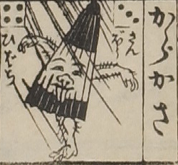

唐傘；カラカサ，一本足；イッポンアシ

唐傘の化物。傘に眉目鼻口がついており、舌を出している。腕が2本、脚が1本生えており、いずれも毛深い。
出典：親書誌：U426_nichibunken_0081：大新板化物飛巡双六；オオシンパンバケモノトビマハリスゴロク／日付：2006／資源識別子：U426_nichibunken_0081_0027_0000
Copyright (c)2010- International Research Center for Japanese Studies, Kyoto, Japan. All rights reserved.